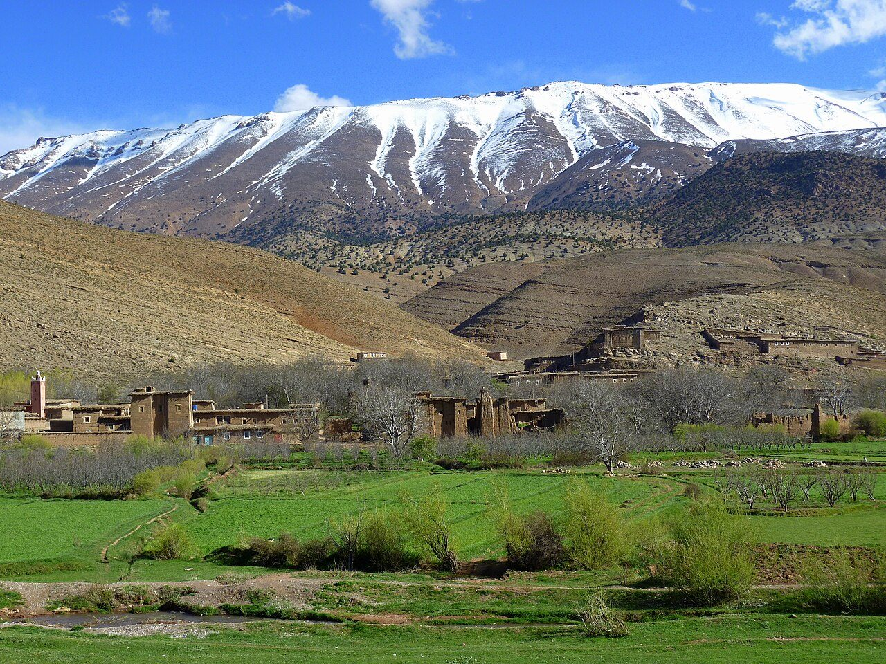
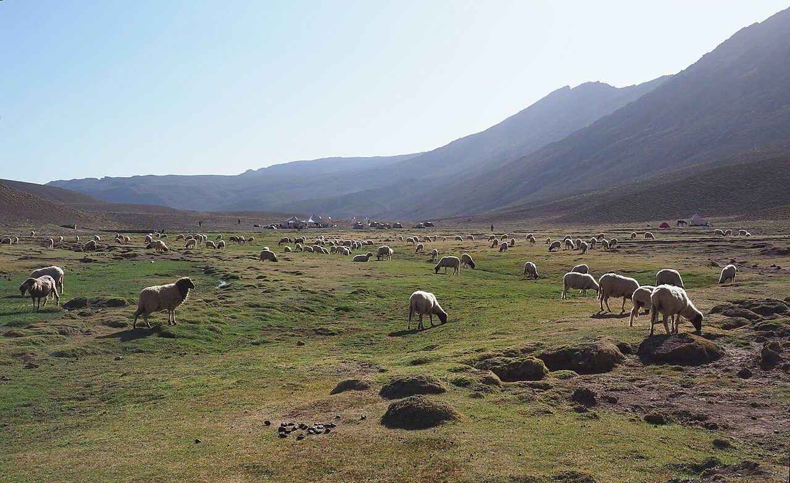
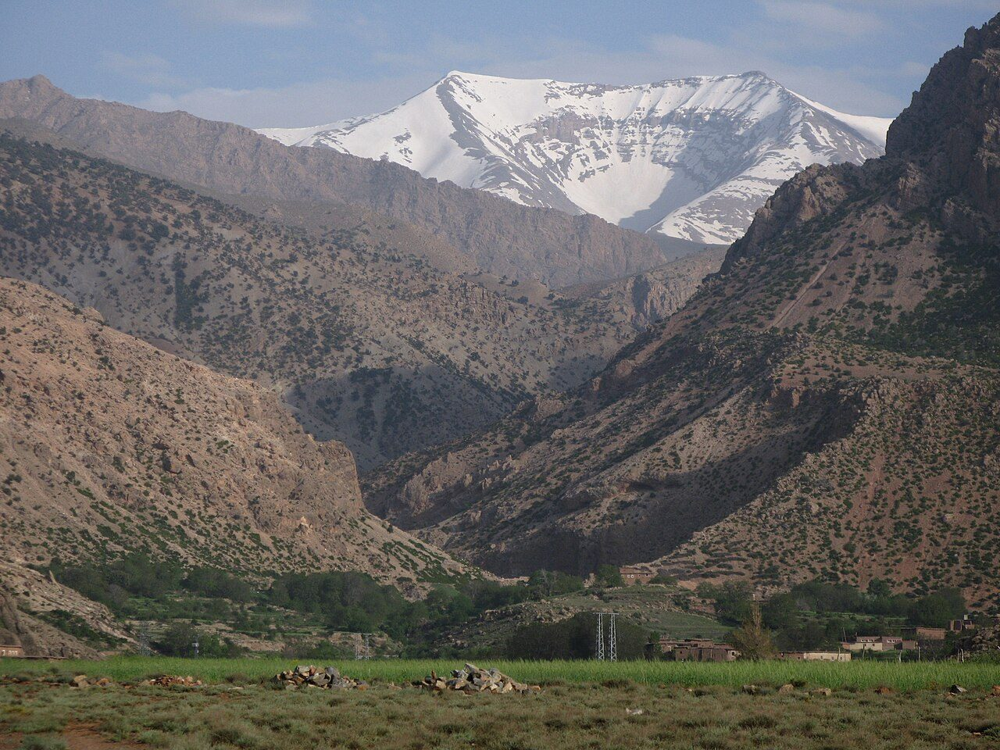
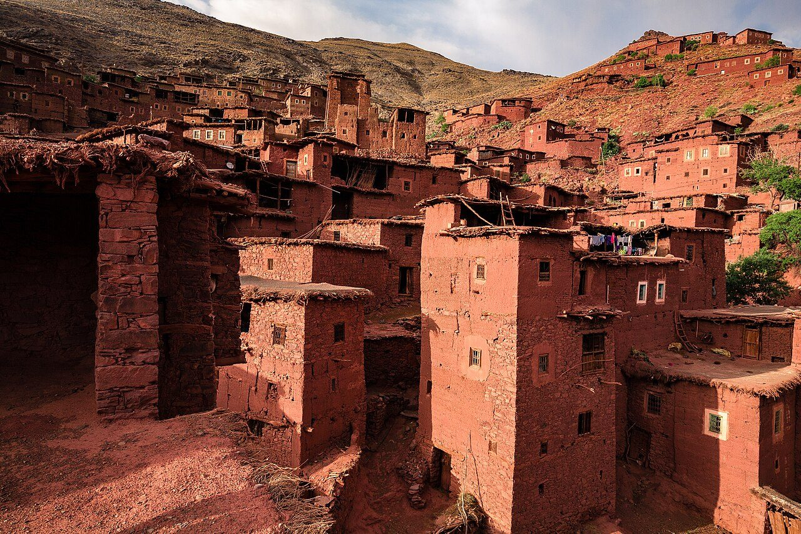
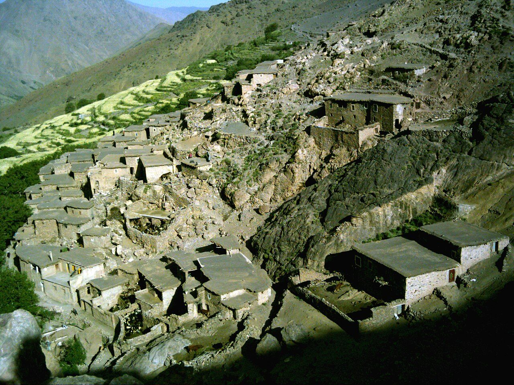
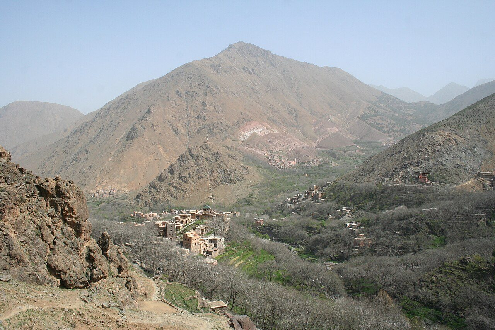
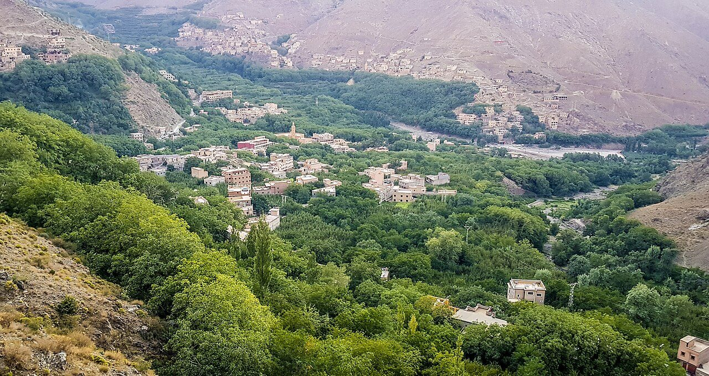
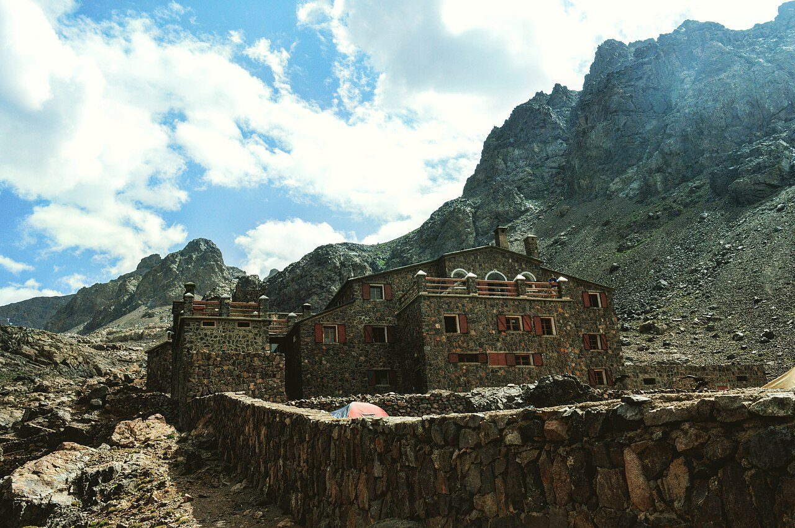
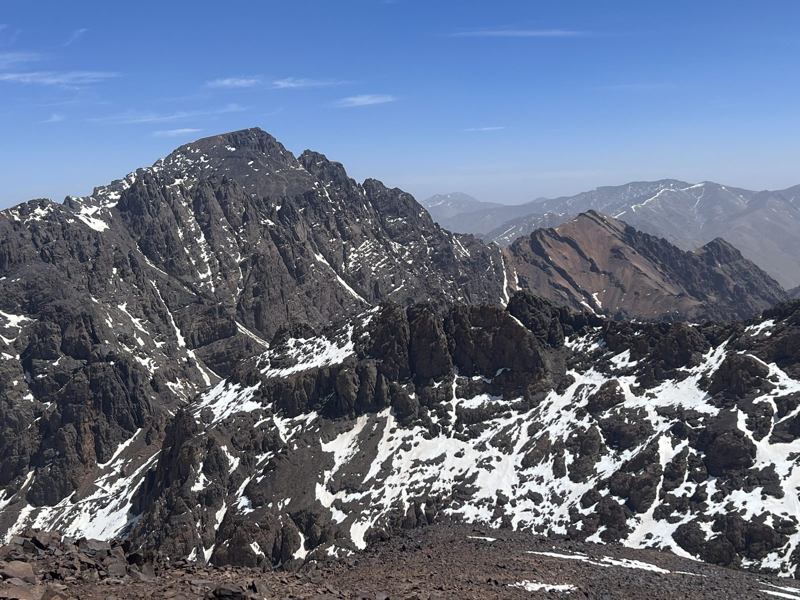

High Atlas Traverse
M'Goun to Toubkal — the roof of North Africa on foot.
There are 303 km between the two ends of the High Atlas Traverse, and Toubkal Summit is the far one. You begin at Aït Bougmez Valley. Watch Walks moves you along it with the steps you already take, so it's about 12 weeks at 5,000 steps a day. Here are its 15 landmarks, in the order you meet them, photographed and written up.
- 303km end to end
- 15landmarks
- 12 weeksat 5,000 steps a day
- Toubkal Summitfinishes at

The landmarks of High Atlas Traverse
15 landmarks, in walking order. Each photograph is by the person credited beneath it, used as they licensed it.
-

Photo: *pascal* from Savoie, France · Wikimedia Commons, CC BY 2.0 Aït Bougmez Valley
Known as the Happy Valley, Aït Bougmez is a broad green floor of barley terraces and walnut trees, its flat-roofed pisé villages set beneath red rock walls. Mules graze where the Assif Bougmez braids through the fields. At roughly 1,850 metres, it marks the start of the traverse, with the full breadth of the High Atlas stacked ahead.
-
Tizi n'Aït Imi
The path leaves the valley floor and climbs in tight zigzags through juniper and thorn. By the col — Tizi n'Aït Imi, near 2,900 metres — the barley is gone and the M'Goun massif fills the sky, pale limestone streaked with old snow. A muleteer shares mint tea in the wind. Ahead the ground tilts up towards the high plateau.
-

Photo: Frank Vassen from Brussels, Belgium · Wikimedia Commons, CC BY 2.0 Tarkeddit Plateau
Grass and grazing sheep spread across Tarkeddit, a broad shelf at about 2,900 metres where shepherds' stone azibs shelter behind low walls. It is the last camp before the M'Goun summit push. As the light turns amber on the ridge, tents go up beside a cold spring, and the temperature drops hard towards freezing after dark.
-

Photo: Migeo53 · Wikimedia Commons, CC BY-SA 4.0 Ighil M'Goun
Head-torches leave camp at four, and the long summit ridge unrolls under starlight. Ighil M'Goun tops out at 4,071 metres — the highest summit outside the Toubkal massif — a knife of shattered rock with the Sahara's haze to the south and the Toubkal range far to the west. Wind hammers the cairn. The whole traverse is earned from here.
-
Upper Tessaout Gorges
Down the far side, the route drops into the Tessaout, following the young river as it carves between soaring walls. The path crosses cold braids and boulder fields, past gardens clinging to any flat ledge. Kingfisher-blue pools sit in the shade, fig and walnut trees mark each hamlet, and the roar of water fills the narrow, twisting gorge for hours.
-
Amezri
Amezri stands as a stack of earth-brown houses welded to the hillside, its terraces dropping to the river in green steps. Children run out to meet arrivals; a woman beats wool on a flat rock. Everything here moves by mule along the old paths. Bread, dates and water can be found in the shade before the valley narrows again downstream.
-

Photo: ::ErWin · Wikimedia Commons, CC BY-SA 2.0 Magdaz
Few villages in the Atlas are as photographed as Magdaz, its tall tighremt houses — fortified, tiered, centuries old — rising in stages of red clay above the walnut groves. Smoke threads from the roofs, and the muleteers know every family by name. Carved doors and stone irrigation channels line the paths, before the route climbs west, away from the Tessaout.
-
Arous Gorge
West of the Tessaout the trail crosses high, empty country — bare passes, dry riverbeds, the odd shepherd's stone shelter. The Arous gorge cuts a green line through it, its walls sheer and shadowed even at noon. Ravens tumble on the wind above its rim. Nights are cold and silent, days long between water, the Toubkal massif slowly growing on the horizon.
-
Tizi n'Tacheddirt
At last the eastern rampart of the Toubkal massif bars the way, and the path grinds up to Tizi n'Tacheddirt, a stony col near 3,170 metres. From the top, the whole Imenane and Ourika drainage opens below in ridge after ridge. Snow lingers in the north-facing gullies into June, and a long descent west drops away from the gale.
-

Photo: Michael Smith Lionfishy at English Wikipedia · Wikimedia Commons, Public domain Tacheddirt
Tacheddirt clings to the mountainside at about 2,314 metres, said to be the highest permanently inhabited village in the High Atlas. Terraced fields of potato and barley climb impossibly steep slopes above it. A gîte offers a warm room and a tagine, and after days in wild country the hum of the village generator is the first mechanical sound in a while.
-

Photo: Richard Allaway · Wikimedia Commons, CC BY 2.0 Tizi n'Tamatert
Tizi n'Tamatert is a gentler col at around 2,279 metres, the saddle that links Tacheddirt's valley to Imlil's. Juniper and walnut return on the descent, and the track becomes a real mule road, its stones polished by generations of traffic. The Aït Mizane valley unrolls green below, with the great south wall of Toubkal now looming ahead, streaked with snow.
-

Photo: Mounir Neddi · Wikimedia Commons, CC BY-SA 4.0 Imlil
Imlil, at 1,740 metres, is the busy hub of Toubkal trekking — gîtes, mule stations and cafés stacked along one steep street, thick with the smell of grilling brochettes. It is where trekkers resupply for the final climb, and where guides haggle over loads in Tashelhit. From here the path turns straight up towards the highest ground in North Africa.
-

Photo: Mohamed Ilyas Errami · Wikimedia Commons, CC BY-SA 4.0 Toubkal Refuge
The valley narrows past Aroumd and the shrine of Sidi Chamharouch, then the trail climbs relentlessly to the Toubkal Refuge at 3,207 metres. Two stone buildings sit in a boulder cwm below the summit walls, where trekkers dry socks on the rocks and the smell of soup drifts out. Most sleep badly here, acclimatising in the thin air before the pre-dawn start.
-
Tizi n'Toubkal
The climb to Tizi n'Toubkal grinds up loose scree before dawn to a wind-scoured col at about 3,940 metres on the mountain's south side. The refuge shrinks to a dot far below, and above the col only broken red rock and sky remain. In the thin air every few steps demand a pause, and the summit ridge finally swings into view to the north.
-

Photo: SimonKing74 · Wikipedia, CC0 Jbel Toubkal
At 4,167 metres, the summit of Jbel Toubkal is the roof of North Africa — a broad, stony crown marked by a welded steel pyramid. The whole range falls away from it: M'Goun a blue wave to the east, the Sahara's haze to the south, ridge upon ridge running west. One hundred and ten kilometres of the High Atlas lie behind, and nowhere in Morocco, or the wider Arab world, stands higher.
Walking the High Atlas Traverse
Your watch is already counting these steps. Watch Walks spends them on the High Atlas Traverse, all 303 km of it, and hands you each landmark as you reach it. There's no route recording, no account and no ads. The Inca Trail is free; this one is a one-time purchase with no subscription.
Other trails in Africa
- Walk the Nile 1,500 km · Egypt
- Kilimanjaro (Machame Route) 45 km · Tanzania
- Mount Kenya (Chogoria Route) 39 km · Kenya
- Otter Trail 37 km · South Africa
- Kilimanjaro (Lemosho Route) 70 km · Tanzania
- GR R2 (Réunion) 144 km · Réunion